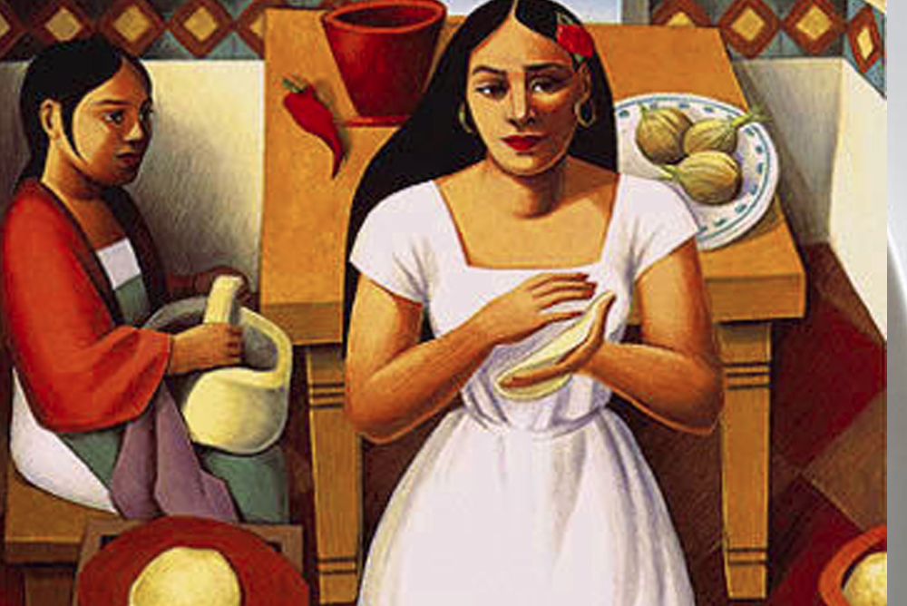
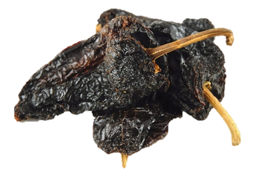
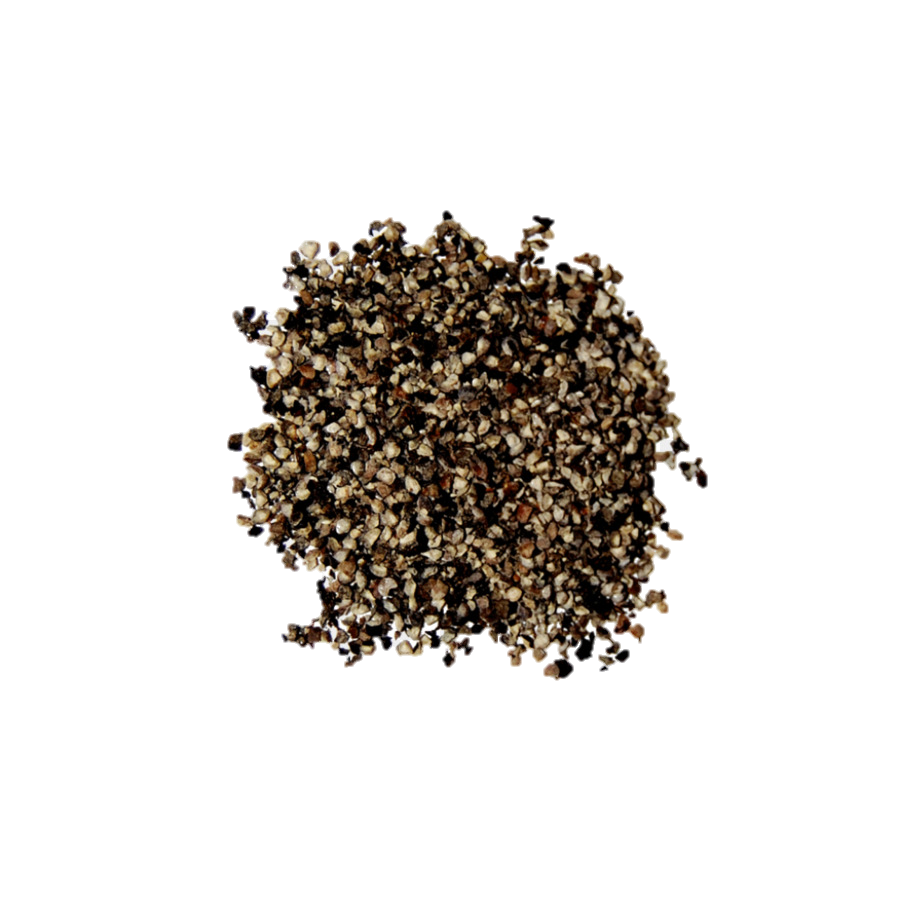
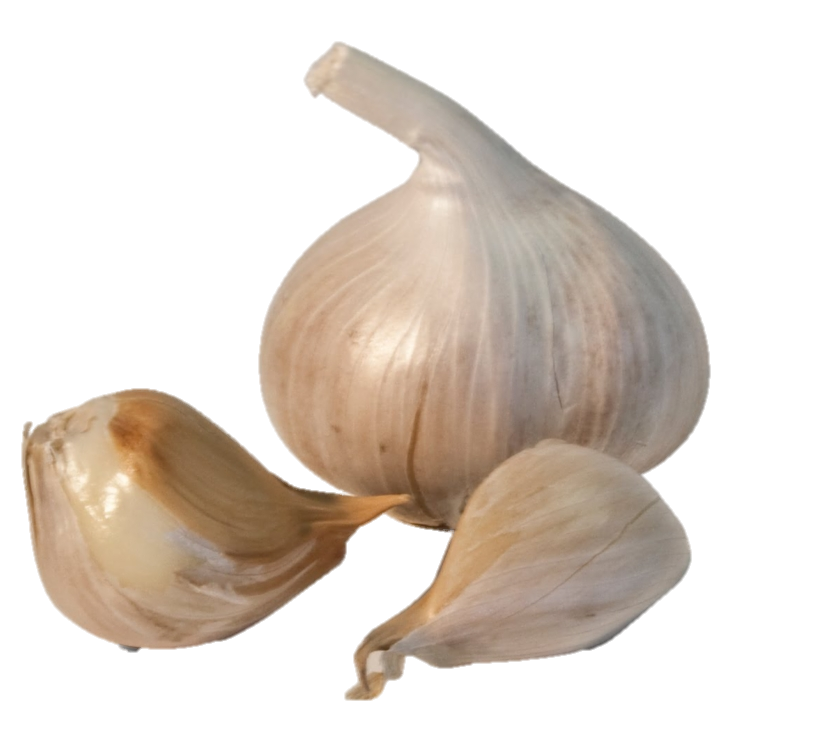

Si deseas ver la película de "Como Agua Para Chocolate" haz clic Aquí
|  Para más información sobre la obra "Como Agua Para Chocolate" clic Aquí |
“Después de dos días de matado el guajolote, se limpia y se pone a cocer con sal. La carne de los guajolotes es sabrosa y aun exquisita si se ha cebado cuidadosamente. Esto se logra teniendo a las aves en corrales limpios, con grano y agua en abundancia.” Así empieza el capítulo 4. Tita preparaba esta receta para una gran celebración que habría en el rancho: el bautizo de Roberto, primer hijo de Rosaura y Pedro. A pesar de que Roberto es producto del matrimonio de Rosaura y Pedro, Tita sentía un inmenso cariño por su sobrino. Lo podemos leer en el siguiente fragmento: En especial de parte de Tita, quien en contra de lo que se esperaba, sentía un inmenso cariño por este niño, olvidando por completo que era el resultado del matrimonio de su hermana con Pedro, el amor de su vida.
En este capítulo se puedo identificar el deseo que tanto Tita y Pedro se tenían. Primero Pedro logra sentir una sensación que despertó su instinto sensual, al escuchar las ollas chocar uno con otras, la voz de Tita cantando mientras cocinaba el mole, y el olor de las almendras dorándose. Entonces Pedro al no resistir estos olores decide ir a la cocina donde Tita estaba inclinada sobre un metate moliendo las almendra y el ajonjolí; bajo su blusa estaban sus senos duros y redondos, ya que ella no solía usar sartén. Pedro al entrar a la cocina quedó petrificado al encontrar a Tita en dicha postura sensual, al subir Tita su mirada y encontrarse con la de Pedro, hubo entre ellos un deseo, que cambiaría su relación, pues desde ese día ya no sería la misma, y más aún cuando Pedro enfoco su mirada en los pechos de Tita.
Luego en el capítulo nos enteramos de que Gertrudis trabaja en un burdel cerca de la frontera. Tita se preocupa por su hermana y por eso le manda una maleta con ropa, un sobre, una vela de su comunión y una foto de las tres hermanas en su comunión. Lo hace sin el conocimiento de Mamá Elena porque ella prohibió mencionar el nombre de Gertrudis.
En el día del nacimiento de Roberto, en casa no había nadie excepto Tita y Rosaura. Mamá Elena y Chencha fueron al mercado para comprar comida y por las luchas en el pueblo no podían regresar a tiempo. Pedro fue a buscar al doctor John Brown para que ayudara a Rosaura en el parto. Fue capturado por los federales y sólo regresará al día siguiente. Tita no sabe qué hacer para ayudar a Rosaura y por eso invoca a Nacha. Ésta le dice lo que tiene que hacer. Cuando Chencha y Mamá Elena regresan Rosaura duerme y el niño está perfectamente envuelto en una manta. Cuando Pedro llega con el doctor John Brown, éste examina a Rosaura. En el parto casi murió y fue muy débil, por eso tiene que quedarse en cama. El problema es que no tiene leche y así no puede alimentar a su hijo. Come Champurrado, lo que debería ayudar, pero la leche no le viene. Tita se ocupa de la alimentación del bebé. Intenta darle té y leche de vaca, pero Roberto no lo quiere. Al final le da su pecho porque no puede oír más su llanto y hay un milagro: Tita tiene leche para alimentar a Roberto. Pedro la ve en ese momento y está muy orgulloso. Parece como si Tita fuera la verdadera madre y no Rosaura. Pedro ayuda a Tita: siempre está de guardia cuando Tita alimenta a Roberto para que nadie se acerque. Es un secreto entre los dos. En el bautizo de Roberto Rosaura no puede participar y por eso Tita lleva a Roberto todo el tiempo. Tita está muy contenta porque Pedro y Roberto están cerca de ella. No necesita nada más. Pero Mamá Elena no quiere tolerar que Tita sea feliz y por eso cuenta en voz alta al cura que va a mandar a Pedro, Rosaura y Roberto a Texas para que tengan un médico cuando lo necesiten. Cuando Tita oye esto sufre un shock. Así Mamá Elena arruina a Tita el bautizo, la primera fiesta de la que disfrutó en su vida.
La cocina. En la cocina que es donde pasa Tita mayor tiempo, se sabe que hay una mesa y que hay dos puertas, una de ellas lleva hacia el patio trasero donde se encuentra un huerto, y la otra que lleva hacia un pasillo. Esto lo podemos leer en los siguientes fragmentos de capítulos anteriores:
Capítulo I: Tita arribó a este mundo prematuramente, sobre la mesa de la cocina, entre los olores de una sopa de fideos que estaba cocinando, los del tomillo, el laurel, el cilantro, el de la leche hervida, el de los ajos y, por supuesto, el de la cebolla.
Capítulo I: Ese gigantesco mundo que empezaba de la puerta de la cocina hacia el interior de la casa, porque el que colindaba con la puerta trasera de la cocina y que daba al patio, a la huerta, a la hortaliza, sí le pertenecía por completo, lo dominaba.
Capítulo II:Y diciendo esto, Tita salió rápidamente de la cocina, por la otra puerta, hacia la sala, donde Chencha y Gertrudis bordaban la sábana nupcial.
Patio. Donde se celebran las bodas y fiestas. En la parte trasera hay un hurto, y una especie de granja, con animales como gallinas. Es aquí donde se celebra el bautizo de su sobrino, Roberto.
Puedes ver un resumen general sobra la obra "Como Agua Para Chocolate" en el siguiente vídeo.
Imágenes de mole guajolote con almendra y ajonjolí.
Amor. Tita sentía mucho amor por su sobrino, Roberto. Siendo así que ella no soportaba ver que su sobrino aguantara hambre debido que su verdadera madre, Rosaura, no podía darle leche, y aunque consiguieron nodrizas, no funcionó, y Tita ante esta situación decidió darle su pecho a su sobrino aun sabiendo que ella estaba seca, pero sucedió un milagro: el niño logro sacarle leche a Tita salió, por lo que ella pudo alimentar a su sobrino. Lo podemos leer en los siguientes fragmentos del capítulo 4:Buscaba su leche entre los senos de Tita. Si hay algo en la vida que Tita no resistía era que una persona hambrienta le pidiera comida y que ella no pudiera dársela. Le provocaba mucha angustia. Y sin poderse contener por más tiempo, Tita se abrió la blusa y le ofreció al niño su pecho.
Tita se abrió la blusa y le ofreció al niño su pecho. Sabía que estaba completamente seco, pero al menos le serviría de chupón y lo mantendría ocupado mientras ella decidía qué hacer para calmarle el hambre.
Cuando ella vio que el niño recuperaba poco a poco la tranquilidad en su rostro y lo escuchó deglutir sospechó que algo extraordinario estaba pasando. ¿Sería posible que el niño se estuviera alimentando de ella? Para comprobarlo, separó al niño de su pecho y vio cómo le brotaba un chisguete de leche. Tita no alcanzaba a comprender lo que sucedía. No era posible que una mujer soltera tuviera leche, se trataba de un hecho sobrenatural y sin explicación en esos tiempos.
Si deseas ver la película de "Como Agua Para Chocolate" haz clic Aquí |
Imagénes acerca el capítulo nº 4
 Chile Mulato |
Chile Pasilla |
 Chile Ancho |
Almendras |
Ajonjolí |
Caldo de Guajolote |
Bizcocho |
 Cacahuates |
Cebollas |
Vino |
Chocolate |
Anís |
Manteca |
 Clavo |
Canela |
|  Pimienta |
Azúcar |
Semillas de Chile |
|  Ajos |